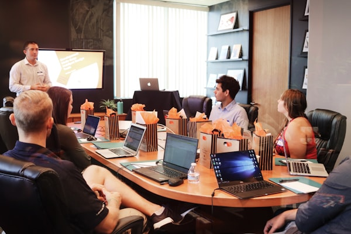
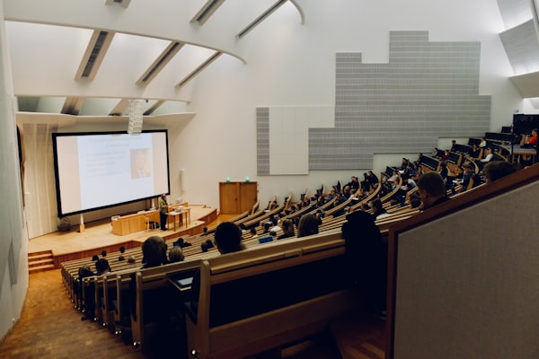
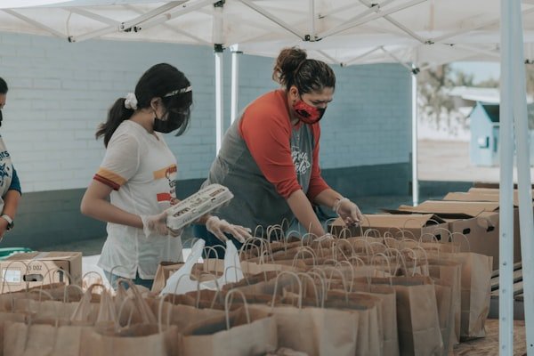
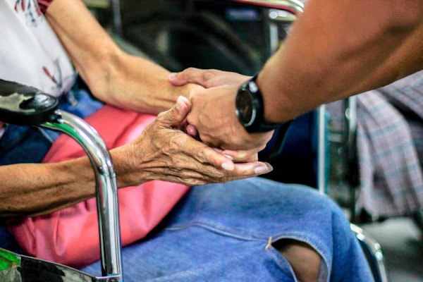

Speaking & Workshops
Talks That Actually Change How People Rest
From keynotes to full-day workshops — each engagement is grounded in clinical research and delivered with warmth, humor, and real-world relevance.
Why Nurse Cindy?
A Clinical Voice in a Crowded Wellness Space
Most wellness speakers talk in generalities. Nurse Cindy brings something different: two decades of frontline healthcare experience and the scientific credibility of the 7 Types of Rest® framework — translated into language your team can understand and use the same day.
As a certified facilitator trained under Dr. Saundra Dalton-Smith, she doesn't just share concepts. She helps audiences identify their specific rest deficits through guided reflection, and leaves every room with a personal action plan.
The result isn't just inspiration — it's measurable behavior change.
How We Work Together
Engagement Formats
Every organization is different. Nurse Cindy offers flexible formats to match your team's needs, schedule, and goals.
Keynote
High-impact, inspiring, and immediately actionable. Perfect for conferences, annual meetings, or leadership summits.
45 – 90 minHalf-Day Workshop
Deeper dive into the 7 Types of Rest with guided assessments, small group discussion, and team action planning.
3 – 4 hoursFull-Day Training
Comprehensive training for HR teams, wellness committees, or leadership cohorts building a culture of sustainable performance.
Full dayVirtual Session
All formats available virtually with interactive engagement — proven effective for distributed and hybrid teams.
Any lengthSpeaking Topics
Five Signature Talks
Each topic can be delivered as a standalone talk or woven into a custom program. Contact Cindy to discuss a tailored approach for your audience.
Finding Calm in a Constantly Stimulating World
We are living through the most overstimulated moment in human history — and our nervous systems are paying the price. This talk explores the science of sensory and mental overload, practical patterns for building calm into a chaotic schedule, and why "just put down your phone" advice misses the point entirely. Audiences leave with specific, usable techniques for reclaiming mental bandwidth.
Rest That Fits Real Life
Rest doesn't require a vacation, a spa day, or two uninterrupted hours. This talk dismantles the myth that rest is a luxury and reframes it as a skill — one that can be practiced in the margins of a full life. Nurse Cindy shares the evidence-based micro-rest practices that busy professionals can actually implement. Ideal for high-achieving teams who feel guilty even considering slowing down.
Beyond Burnout: Understanding the Real Causes of Exhaustion
Burnout isn't cured by a long weekend. Drawing from Dr. Saundra Dalton-Smith's research and her own clinical experience, Nurse Cindy walks audiences through the seven root causes of exhaustion that sleep alone cannot address. This is the talk that makes people say, "I finally understand why I'm so tired." Essential for healthcare organizations, human services teams, and any industry with high caregiver load.
Emotional Skills That Keep Relationships Strong
Chronic emotional depletion shows up as irritability, disconnection, and the slow erosion of the relationships we value most. This talk introduces the concept of emotional rest — not therapy, but the practical habits that prevent emotional debt from accumulating. Designed for teams navigating high-stakes relationships with patients, clients, customers, or each other.
The Hidden Cost of Always Being the Strong One
For the nurses, the caregivers, the parents, the managers — the people everyone else leans on: this talk is for you. Nurse Cindy speaks directly to the exhaustion of holding others up while quietly falling apart inside. With compassion and clinical honesty, she illuminates the emotional and spiritual rest deficits that accompany the "strong one" role, and offers a path toward sustainable strength. Consistently the highest-rated talk for healthcare and helping-profession audiences.
Who This Is For
Built for Your Audience

Corporate HR & Wellness Teams
Universities & Academic Institutions
Nonprofits & Mission-Driven Orgs
Caregiver & Support CommunitiesWhat People Say
From the Audience
Her insights on emotional rest were eye-opening. I feel more balanced and at peace — and so does my team.
Cindy's passion for rest is contagious. I left feeling empowered and ready to implement what I learned.
Nurse Cindy's talk transformed my perspective on rest. This showed me how wrong I was — in the best possible way.